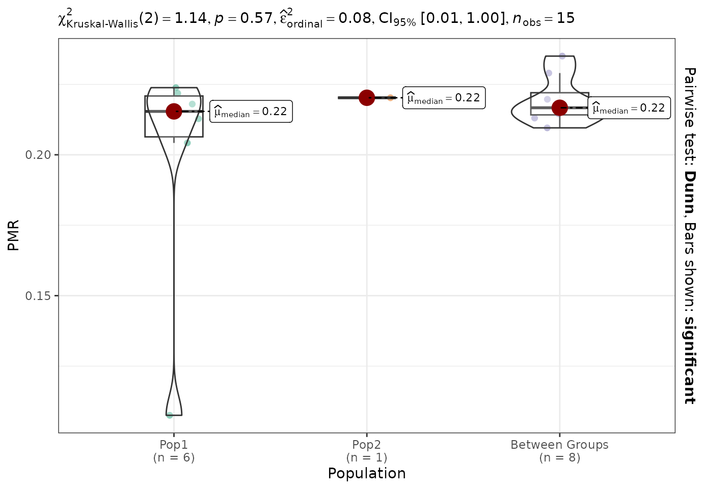
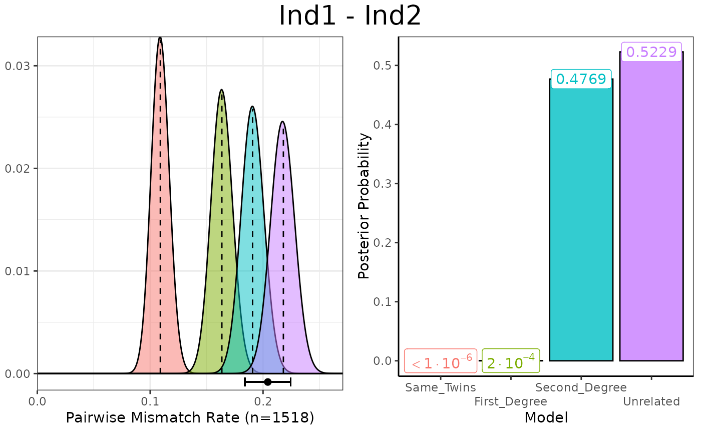
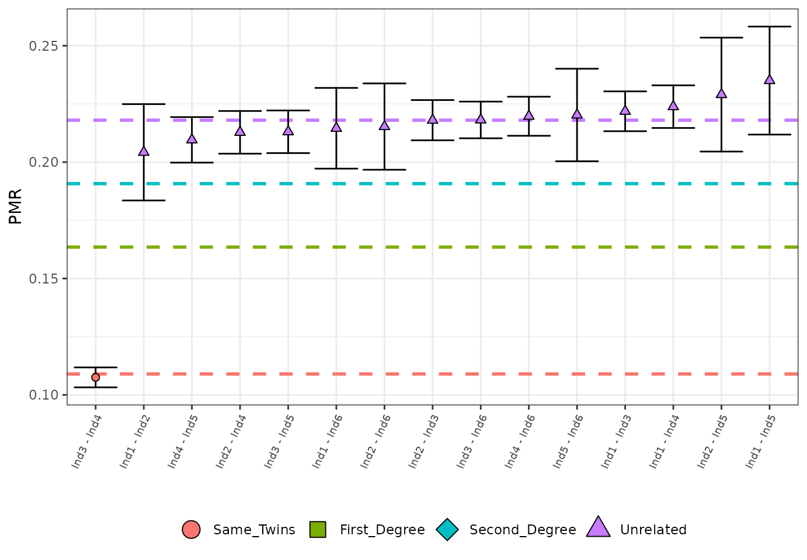
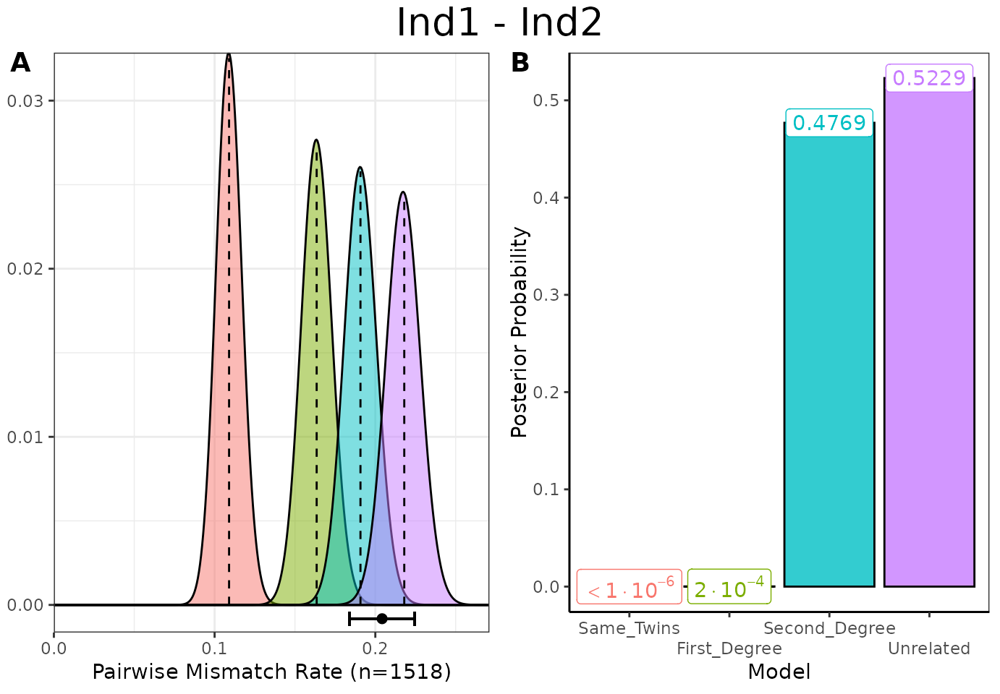

Introduction
BREADR (Biological Relatedness from Ancient DNA in R) is a Bayesian method for identifying the degrees of relatedness between pairs of individuals, especially in cases of extremely low-coverage sequence data (as low as 0.04X). BREADR leverages the so-called pairwise mismatch rate (PMR), a measure of how much the genotypes of individuals do not match, to do this. BREADR assumes an underlying binomial model for the proportion of mismatched genotype calls, and calculates posterior probabilities for degrees of relatedness up to the second-degree (third-degree or higher are defined as “Unrelated”). BREADR works with the Eigenstrat data format as an initial input, allowing researchers to control for factors such as contamination before BREADR is used.
We have implemented BREADR in the R statistical programming language, and include methods for assigning degrees of relatedness (up to the second-degree), testing for whether separate groups of individuals can be merged into one analysis, for visualising both pairwise and overall relatedness, for sensitivity analyses for changes in the prior distributions, and for testing if degrees of relatedness up to the tenth-degree are consistent with the observed PMR. This basic example shows you how to analyse a real (anonymised) ancient DNA data set.
The theory behind BREADR
For a comprehensive description of the underlying model used by BREADR, please see the manuscript. However, we give a brief overview of the concept here. Consider two individuals and , with independent sites in the genome for which genotype calls have been made. We count the number of genotypes which do not match, and denote this . We assume that will follow a binomial distribution , that is defined by how closely related the two individuals are.
It is known that if the expected PMR of two unrelated individuals is , then the expected PMR for individuals how are related in the degree will be
Since the probability mass function for a binomial distribution is well known, we can calculate the probability of observing the number of mismatched genotypes for (same/twins), (first-degree), (second-degree), and then a Poisson-weighted sum of the remaining values of to capture the third-degree or less related probability.
When we have the probability of observing the number of mismatches we see, given a value of , denoted , and assuming a (user-defined) prior probability of relatedness, we then calculate a posterior probability of the degree of relatedness being , given the observed PMR.
Processing your data
An analysis would normally start by defining paths to all three Eigenstrat files, i.e.,
ind_path <- "path/to/eigenstrat/indfile"
snp_path <- "path/to/eigenstrat/snpfile"
geno_path <- "path/to/eigenstrat/genofile"and we would then preprocess this data using the processEigenstrat() function,
counts_example <- processEigenstrat(
indfile = ind_path,
snpfile = snp_path,
genofile = geno_path
)Since this step is the most computationally expensive, we include an option to automatically save the output as a TSV upon completion of the preprocessing, i.e, to avoid repeating the preprocessing
counts_example <- processEigenstrat(
indfile = ind_path,
snpfile = snp_path,
genofile = geno_path,
outfile = "path_to_save_tsv"
)Also included are options to change the minimum distance between overlapping sites (filter_length) from the default an option to only include individuals (pop_pattern) from certain populations (as defined in the ind file) and an option to remove C->T and G->A SNPs to avoid the effects of deamination.
Processing only pairs within groups to save computational effort
A new feature is the ability to process only pairs within the same populations (as per the populations defined in column three of the Eigenstrat ind file). This can be useful when populations should not be considered together as, for example, they may never have been able to be closely related due to vast distances in time or geography, and/or might have a different baseline PMR. When running the processEigenstrat() function, by setting the parameter byPop=TRUE, only individuals in the same population will have a PMR calculated. In the example data, individuals Ind1-Ind4 are in “Pop1” and individuals Ind5-Ind6 are in “Pop2”. This means that while each genotype of each individual will be read into BREADR, only the four individuals in Pop1 are compared to each other ( pairs) and only the two individuals in Pop2 are compared to each other ( pairs), totaling 7 PMR calculations. This is less than the pairs that would be calculated by default, more than halving the number of calculations. This saving in computational effort will be greater for large sample sizes. We also include a related parameter minMerge which defines the smallest possible “group” (default equals 2). This is to control the smallest group sizes as estimating a baseline PMR can be difficult for small groups (such as in Pop2 in the example data), and any groups with a sample size smaller than this parameter are merged into one group called “Merged” (hence you should avoid this as a population name in your Eigenstrat ind file when using this parameter).
Note that since the Eigenstrat files are too large to include, we provide a pre-processed data set called counts_example which is the product of running processEigenstrat() on real data (although the raw Eigenstrat files can be found on the Github page).
We now load the counts_example tibble.
#> pair nsnps mismatch pmr
#> 1 Ind1 - Ind2 1518 310 0.2042161
#> 2 Ind1 - Ind3 9435 2093 0.2218336
#> 3 Ind1 - Ind4 8283 1854 0.2238319
#> 4 Ind1 - Ind5 1336 314 0.2350299
#> 5 Ind1 - Ind6 2242 481 0.2145406
#> 6 Ind2 - Ind3 9119 1988 0.2180064
#> 7 Ind2 - Ind4 7984 1699 0.2128006
#> 8 Ind2 - Ind5 1179 270 0.2290076
#> 9 Ind2 - Ind6 1965 423 0.2152672
#> 10 Ind3 - Ind4 20952 2253 0.1075315
#> 11 Ind3 - Ind5 7994 1703 0.2130348
#> 12 Ind3 - Ind6 10994 2398 0.2181190
#> 13 Ind4 - Ind5 6924 1451 0.2095609
#> 14 Ind4 - Ind6 9745 2141 0.2197024
#> 15 Ind5 - Ind6 1739 383 0.2202415Calling degrees of relatedness from counts
We can estimate the degrees of relatedness from the raw counts using the callRelatedness() function. Users have the option to change the prior probability for each degree of relatedness (class_prior) from the default uniform prior, to define the expected PMR (average_relatedness) for a pair of unrelated individuals from the default of the sample median, and to set the minimum number of overlapping SNPs required for a pair of individuals (filter_n) to be included in the analysis from the default of 1. If the user decides to use the sample median as an estimate for the expected PMR for a pair of unrelated individuals, the minimum number of overlapping SNPs for a pair (median_co) can be changed from the default of 500.
relatedness_example <- callRelatedness(counts_example)
relatedness_example#> # A tibble: 15 × 12
#> row pair relationship pmr sd mismatch nsnps ave_rel Same_Twins
#> <int> <chr> <fct> <dbl> <dbl> <dbl> <dbl> <dbl> <dbl>
#> 1 1 Ind1 - In… Unrelated 0.204 0.0103 310 1518 0.218 6.71e- 26
#> 2 2 Ind1 - In… Unrelated 0.222 0.00428 2093 9435 0.218 1.22e-214
#> 3 3 Ind1 - In… Unrelated 0.224 0.00458 1854 8283 0.218 2.00e-194
#> 4 4 Ind1 - In… Unrelated 0.235 0.0116 314 1336 0.218 2.68e- 37
#> 5 5 Ind1 - In… Unrelated 0.215 0.00867 481 2242 0.218 9.82e- 46
#> 6 6 Ind2 - In… Unrelated 0.218 0.00432 1988 9119 0.218 5.06e-195
#> 7 7 Ind2 - In… Unrelated 0.213 0.00458 1699 7984 0.218 4.95e-156
#> 8 8 Ind2 - In… Unrelated 0.229 0.0122 270 1179 0.218 1.80e- 30
#> 9 9 Ind2 - In… Unrelated 0.215 0.00927 423 1965 0.218 1.10e- 40
#> 10 10 Ind3 - In… Same_Twins 0.108 0.00214 2253 20952 0.218 1 e+ 0
#> 11 11 Ind3 - In… Unrelated 0.213 0.00458 1703 7994 0.218 6.83e-157
#> 12 12 Ind3 - In… Unrelated 0.218 0.00394 2398 10994 0.218 2.05e-235
#> 13 13 Ind4 - In… Unrelated 0.210 0.00489 1451 6924 0.218 1.92e-127
#> 14 14 Ind4 - In… Unrelated 0.220 0.00419 2141 9745 0.218 2.95e-214
#> 15 15 Ind5 - In… Unrelated 0.220 0.00994 383 1739 0.218 3.64e- 39
#> # ℹ 3 more variables: First_Degree <dbl>, Second_Degree <dbl>, Unrelated <dbl>For each pair of individuals, a posterior probability for same/twins, first-degree, second-degree and unrelated will be calculated and reported in the final four columns. However, the relationship that is reported is simply the relationship that had the highest posterior probability, no matter how high the value of the second highest posterior probability is. In the section titled “Visualising the relatedness information for two individuals” we will see why it can be important to look at these values for “borderline” assignments, and how this can be easily done using BREADR.
Assessing if groups can be merged
We now also include a diagnostic plot to consider whether populations can be merged. We may wish to merge populations (we use population instead of group to match the Eigenstrat nomenclature for the third column of the IND file) if we have a small number of individuals, and wish to increase the pairwise sample size.
The plotDOUGH() function takes as input your processEigenstrat() output (the raw counts) and produces side-by-side box plots/violin plots, comparing the PMR values per population, with associated non-parametric tests for whether the median PMR (which we use as a baseline level of relatedness by default in BREADR) differs between populations. When employing this function the user can set parameters for the font size on the x-axis (fntsize, default equals 7), the minimum number of overlapping SNPs for a pair to be included in the tests and plot (nsnps_cutoff, default is 500) and removeBetween. removeBetween forces the test to ignore the between-population PMR values, which may be useful.
In cases where there are more than two populations, BREADR first performs a Kruskal-Wallis test to see if any population medians significantly differ (p-value in top-left), and then performs pairwise posthoc Dunn’s tests to identify which population medians are significantly different, with p-value adjustments performed using the Holm-Bonferroni method. Populations with significantly differently medians are then identified in the plot as bars above the population (with p-values). If there are only two population (and removeBetween is set to TRUE) then a Mann-Whitney U-test is performed and no bars will be shown even if the groups are significantly different, so the p-value in the title must be used to assess significance. If two populations are not significantly different, then they can, in theory, be merged.
We run plotDOUGH() on our example in the following way:
indfile1 <- fs::path_package(package = "BREADR", "extdata/example.ind.txt")
plotDOUGH(
counts_example,
indfile = indfile1,
nsnps_cutoff = 500
)
Figure 1: plotDOUGH results for the example data set, with the Between Groups population kept.
In this example (Figure 1), the Kruskal-Wallis test returns a p-value of 0.57 (>0.05), indicating that there is no evidence that any population median is different, and hence our two populations can be merged. However, these non-parametric tests can lack statistical power for very small sample sizes, as might be the case here. However, as an example of when there is a difference, we modified the example data such that Pop1 and Pop2 cannot be merged. (Note that the “Between” groups PMR values are not significantly different from Pop1 or Pop2, but this is only because they are the average of the two groups, and in some sense should be ignored here).

Figure 2: plotDOUGH results for the example data set where the PMR values have been artifically modified to yield different baseline (median) PMR values.
Visualising overall relatedness patterns
An overall picture of the relatedness for these individuals can be created (Figure 3), which displays the highest posterior probability degree of relatedness for each pair of individuals, indicated by the colour and shape of the points with 95% confidence intervals. The dashed horizontal lines indicated the expected values for each degree of relatedness.
plotLOAF(relatedness_example)
#> No minimum number of overlapping SNPs given.
#> Using default minimum of 500.
#> No upper limit on number of pairs to plot given.
#> Plotting first 15 pairs.
Figure 3: Pairwise diagnostic plot for relatedness call for Ind1 and Ind 2 called using the number option for row. (A) the distribution of PMR values given the number of overlapping SNPs (n=1518) for each degree of relatedness (filled colour), and the observed PMR with 95% confidence intervals. (B) relative posterior probabilities for all four possible assignments of degrees of relatedness. Note we added panel labels A and B using the labels parameter.
Users can choose to remove individuals with less than a user-defined number of overlapping SNPs (nsnps_cutoff). In large data sets, it is expected that the vast majority of individuals will be unrelated, and so the user may wish to only plot the more closely related individuals. To this end, the user may choose to plot only the first individuals (using the input parameter N), which have been sorted by PMR value, in ascending order.
Visualising the relatedness information for two individuals
A researcher may be interested in exploring the relatedness between two specific individuals in the analysis. These individuals may be especially important to the study or may have a PMR that is “uncertain” (i.e., falls between two of the expected values for degrees of relatedness).
A plot for the assignment of the “Unrelated” degree of relatedness to individuals Ind1 and Ind2 can be produced which shows diagnostic information about the estimated genetic relatedness between a single pair of individuals (Figure 4). In the left panel, the distribution of PMR values for each degree of relatedness, given the number of overlapping SNPs, with the observed PMR (and 95% confidence interval) displayed below this. In the right panel are the normalised posterior probabilities for each of the degrees of relatedness, indicating the certainty with which the degree of relatedness with the highest posterior probability was chosen.

Figure 4: Pairwise diagnostic plot for relatedness call for Ind1 and Ind 2 called using the text option for row. (A) the distribution of PMR values given the number of overlapping SNPs (n=1518) for each degree of relatedness (filled colour), and the observed PMR with 95% confidence intervals. (B) relative posterior probabilities for all four possible assignments of degrees of relatedness. Note we added panel labels A and B using the labels parameter.
Alternatively we can create an identical plot, but this time choose the row using the full pair name instead of the row number (Figure 5).

Figure 5: Pairwise diagnostic plot for relatedness call for Ind1 and Ind 2 called using the text option for row. (A) the distribution of PMR values given the number of overlapping SNPs (n=1518) for each degree of relatedness (filled colour), and the observed PMR with 95% confidence intervals. (B) relative posterior probabilities for all four possible assignments of degrees of relatedness. Note we added panel labels A and B using the labels parameter.
From these we make the following observations. First, in panel A we see that the observed PMR falls between the distributions for second-degree and unrelated. Second, in panel B we see that the posterior probabilities for both assignments are relatively similar (even if the highest posterior assignment was reported as unrelated). Unfortunately, this is the limit of the resolution of BREADR, as we cannot assign a third-degree relationship.
Binomial tests for degrees of relatedness
Since we assume that the number of mismatches follows a binomial distribution, and since we know the expected rate of mismatch for any value of , we can test if the observed PMR is consistent with a -degree of relatedness using a binomial hypothesis test. This is done using the test_degree function where again the row of interest must be given, and the degree () is specified.
For example, we can test whether the observed PMR between Ind1 and Ind2 is consistent with a 3rd-degree genetic relationship, or not, but any degree of relatedness from 0 to 10 (including non-integer values) can be investigated. This function returns the p-value from the associated binomial test, and by setting verbose to TRUE, all diagnostic output from the test can be displayed.
test_degree(relatedness_example, row = 1, degree = 3, verbose = TRUE)
#> Testing H0 : "Ind1 - Ind2" are 3rd-degree relatives.
#> Expected PMR : 0.2044
#> Observed PMR : 0.2042
#> Estimated degree : 2.9826
#> p-value : 0.9823
#> Decision : Retain H0
#> [1] 0.9823165Here we see that Ind1 and Ind2 yield a PMR consistent with a third-degree relationship (at the 5% significance level, as the p-value is greater than 0.05). If the verbose parameter is TRUE, then more than the p-value is returned. Specifically, we see (in order) the null hypothesis, the PMR we would expected for a third-degree relationship, the PMR we actually observed, the estimated degree of relatedness (calculated by inverting the equation for ), the p-value and the decision for the test (at the 5% significance level).
Sensitivity of the results to the prior distribution
By default, BREADR sets the prior distribution for the four possible relatedness assignments as equally likely, or a uniform prior of . This is likely not reasonable in a random sample from a true population. However, an uninformative prior makes the least assumptions, and on a practical level, the PMR associated with same/twin or first-degree can often be overwhelmingly obvious for a sufficient number of overlapping sites. Further, some studies will contain random samples from populations, and hence twins will be very rare. Others samples may be from collective burials (for example), in which case elements from the same individuals may be extremely likely. Hence, we leave it to the user to decide on a sensible prior distribution, but concede that this can be difficult.
To address this we include a function called priorSensitivity() to allow researchers to easily explore how sensitive the results of callRelatedness() are to the choice of the prior distribution. The function forms a grid of different prior probabilities to test, and then for each degree of relatedness, at each prior value, calculates the proportion of times each degree of relatedness would have been the “assigned” relationship (when all other priors are varied). Consider the example for Ind1 and Ind2 (row one) in the example data (Figure 6).
BREADR::priorSensitivity(
in_BREADR = relatedness_example,
row = "Ind1 - Ind2",
degrees = c(3, 4),
grid_space = 0.05,
maxPrior = 0.5
)
#> Starting sensitivity analysis (633 separate analyses)....
#> " | | | 0% | | | 1% | |= | 1% | |= | 2% | |== | 2% | |== | 3% | |=== | 4% | |=== | 5% | |==== | 5% | |==== | 6% | |===== | 6% | |===== | 7% | |===== | 8% | |====== | 8% | |====== | 9% | |======= | 9% | |======= | 10% | |======= | 11% | |======== | 11% | |======== | 12% | |========= | 12% | |========= | 13% | |========== | 14% | |========== | 15% | |=========== | 15% | |=========== | 16% | |============ | 16% | |============ | 17% | |============ | 18% | |============= | 18% | |============= | 19% | |============== | 19% | |============== | 20% | |============== | 21% | |=============== | 21% | |=============== | 22% | |================ | 22% | |================ | 23% | |================= | 24% | |================= | 25% | |================== | 25% | |================== | 26% | |=================== | 27% | |=================== | 28% | |==================== | 28% | |==================== | 29% | |===================== | 29% | |===================== | 30% | |===================== | 31% | |====================== | 31% | |====================== | 32% | |======================= | 32% | |======================= | 33% | |======================= | 34% | |======================== | 34% | |======================== | 35% | |========================= | 35% | |========================= | 36% | |========================== | 37% | |========================== | 38% | |=========================== | 38% | |=========================== | 39% | |============================ | 39% | |============================ | 40% | |============================ | 41% | |============================= | 41% | |============================= | 42% | |============================== | 42% | |============================== | 43% | |============================== | 44% | |=============================== | 44% | |=============================== | 45% | |================================ | 45% | |================================ | 46% | |================================= | 47% | |================================= | 48% | |================================== | 48% | |================================== | 49% | |=================================== | 49% | |=================================== | 50% | |=================================== | 51% | |==================================== | 51% | |==================================== | 52% | |===================================== | 52% | |===================================== | 53% | |====================================== | 54% | |====================================== | 55% | |======================================= | 55% | |======================================= | 56% | |======================================== | 56% | |======================================== | 57% | |======================================== | 58% | |========================================= | 58% | |========================================= | 59% | |========================================== | 59% | |========================================== | 60% | |========================================== | 61% | |=========================================== | 61% | |=========================================== | 62% | |============================================ | 62% | |============================================ | 63% | |============================================= | 64% | |============================================= | 65% | |============================================== | 65% | |============================================== | 66% | |=============================================== | 66% | |=============================================== | 67% | |=============================================== | 68% | |================================================ | 68% | |================================================ | 69% | |================================================= | 69% | |================================================= | 70% | |================================================= | 71% | |================================================== | 71% | |================================================== | 72% | |=================================================== | 72% | |=================================================== | 73% | |==================================================== | 74% | |==================================================== | 75% | |===================================================== | 75% | |===================================================== | 76% | |====================================================== | 77% | |====================================================== | 78% | |======================================================= | 78% | |======================================================= | 79% | |======================================================== | 79% | |======================================================== | 80% | |======================================================== | 81% | |========================================================= | 81% | |========================================================= | 82% | |========================================================== | 82% | |========================================================== | 83% | |========================================================== | 84% | |=========================================================== | 84% | |=========================================================== | 85% | |============================================================ | 85% | |============================================================ | 86% | |============================================================= | 87% | |============================================================= | 88% | |============================================================== | 88% | |============================================================== | 89% | |=============================================================== | 89% | |=============================================================== | 90% | |=============================================================== | 91% | |================================================================ | 91% | |================================================================ | 92% | |================================================================= | 92% | |================================================================= | 93% | |================================================================= | 94% | |================================================================== | 94% | |================================================================== | 95% | |=================================================================== | 95% | |=================================================================== | 96% | |==================================================================== | 97% | |==================================================================== | 98% | |===================================================================== | 98% | |===================================================================== | 99% | |======================================================================| 99% | |======================================================================| 100%
#> Collating results....
#> Done.![*__Figure 6__: sensitivity analysis for the relationship between Ind1 and Ind2. The prior probabilities for all degrees of relatedness are tested at values between 0.05 and 0.5. Bars indicate the proportion of times a degree of relatedness was the maximum posterior relationship. Here we see that higher prior probabilities for Second-Degree and Unrelated yield highest posterior probability assignments for those degrees of relatedness, respectively. Hence, we must consider these prior probabilities carefully when assigning this relationship.*](example-pipeline_files/figure-html/unnamed-chunk-14-1.png)
Figure 6: sensitivity analysis for the relationship between Ind1 and Ind2. The prior probabilities for all degrees of relatedness are tested at values between 0.05 and 0.5. Bars indicate the proportion of times a degree of relatedness was the maximum posterior relationship. Here we see that higher prior probabilities for Second-Degree and Unrelated yield highest posterior probability assignments for those degrees of relatedness, respectively. Hence, we must consider these prior probabilities carefully when assigning this relationship.
This output can be difficult to interpret at first, and so we explain it here in detail. From Figure 5 we can see two panels: 2nd-Degree and Unrelated, both with a y-axis from 0% to 100%, and an x-axis that goes from 0 to the (default) maximum tested prior probability of 0.5. For the prior probability value along the x-axis, we see a bar. The way to interpret the first bar (at ) is: when the prior probability of Unrelated is fixed at 0.05, and across all other values that the other three prior values can be (so that all four prior probabilities sum to one), we see that the relationship between Ind1 and Ind2 is returned as “Unrelated” approximately 4% of time, “2nd-Degree” approximately 96% of the time, and never as “Same/Twins” or “1st-Degree”, as we never see the colours associated with them. We can see that the next bar () sees “2nd-degree” assigned most often, but less often than before. And this trend continues. A sensible interpretation of this is that as the prior probability of “Unrelated” increases, we see that the relationship between Ind1 and Ind2 is more likely to be called “Unrelated”, which makes sense. We also see that we would need a prior probability of unrelated of at least 0.25 to call an unrelated relationship.
Since Same/Twins and 1st-degree is never called, the top panel for 2nd-Degree effectively shows the inverse of the bottom panel. Unfortunately this sensitivity analysis shows us that the outcome of BREADR is strongly affected by the prior distribution here, which makes sense since it appears as if the relationship is potentially third-degree.
To give an example of when a degree of relatedness is not affected by the choice of prior probabilities, we produce a sensitivity analysis for Ind3 and Ind4 (Figure 7), who are unambiguously Same/Twins with posterior probability one (to machine precision). We also decrease the grid spacing (grid_space=0.025) to have a finer-scale analysis (at the cost of computational time). Here we can see that no matter how we set the prior distribution for Same/Twins, even as low as 0.025, we still always assign Same/Twins. Hence, this assignment is free of any affect from the prior distribution.
BREADR::priorSensitivity(
in_BREADR = relatedness_example,
row = "Ind3 - Ind4",
degrees = c(1),
grid_space = 0.025,
maxPrior = 0.5
)
#> Starting sensitivity analysis (5263 separate analyses)....
#> " | | | 0% | | | 1% | |= | 1% | |= | 2% | |== | 2% | |== | 3% | |== | 4% | |=== | 4% | |=== | 5% | |==== | 5% | |==== | 6% | |===== | 6% | |===== | 7% | |===== | 8% | |====== | 8% | |====== | 9% | |======= | 9% | |======= | 10% | |======= | 11% | |======== | 11% | |======== | 12% | |========= | 12% | |========= | 13% | |========= | 14% | |========== | 14% | |========== | 15% | |=========== | 15% | |=========== | 16% | |============ | 16% | |============ | 17% | |============ | 18% | |============= | 18% | |============= | 19% | |============== | 19% | |============== | 20% | |============== | 21% | |=============== | 21% | |=============== | 22% | |================ | 22% | |================ | 23% | |================ | 24% | |================= | 24% | |================= | 25% | |================== | 25% | |================== | 26% | |=================== | 26% | |=================== | 27% | |=================== | 28% | |==================== | 28% | |==================== | 29% | |===================== | 29% | |===================== | 30% | |===================== | 31% | |====================== | 31% | |====================== | 32% | |======================= | 32% | |======================= | 33% | |======================= | 34% | |======================== | 34% | |======================== | 35% | |========================= | 35% | |========================= | 36% | |========================== | 36% | |========================== | 37% | |========================== | 38% | |=========================== | 38% | |=========================== | 39% | |============================ | 39% | |============================ | 40% | |============================ | 41% | |============================= | 41% | |============================= | 42% | |============================== | 42% | |============================== | 43% | |============================== | 44% | |=============================== | 44% | |=============================== | 45% | |================================ | 45% | |================================ | 46% | |================================= | 46% | |================================= | 47% | |================================= | 48% | |================================== | 48% | |================================== | 49% | |=================================== | 49% | |=================================== | 50% | |=================================== | 51% | |==================================== | 51% | |==================================== | 52% | |===================================== | 52% | |===================================== | 53% | |===================================== | 54% | |====================================== | 54% | |====================================== | 55% | |======================================= | 55% | |======================================= | 56% | |======================================== | 56% | |======================================== | 57% | |======================================== | 58% | |========================================= | 58% | |========================================= | 59% | |========================================== | 59% | |========================================== | 60% | |========================================== | 61% | |=========================================== | 61% | |=========================================== | 62% | |============================================ | 62% | |============================================ | 63% | |============================================ | 64% | |============================================= | 64% | |============================================= | 65% | |============================================== | 65% | |============================================== | 66% | |=============================================== | 66% | |=============================================== | 67% | |=============================================== | 68% | |================================================ | 68% | |================================================ | 69% | |================================================= | 69% | |================================================= | 70% | |================================================= | 71% | |================================================== | 71% | |================================================== | 72% | |=================================================== | 72% | |=================================================== | 73% | |=================================================== | 74% | |==================================================== | 74% | |==================================================== | 75% | |===================================================== | 75% | |===================================================== | 76% | |====================================================== | 76% | |====================================================== | 77% | |====================================================== | 78% | |======================================================= | 78% | |======================================================= | 79% | |======================================================== | 79% | |======================================================== | 80% | |======================================================== | 81% | |========================================================= | 81% | |========================================================= | 82% | |========================================================== | 82% | |========================================================== | 83% | |========================================================== | 84% | |=========================================================== | 84% | |=========================================================== | 85% | |============================================================ | 85% | |============================================================ | 86% | |============================================================= | 86% | |============================================================= | 87% | |============================================================= | 88% | |============================================================== | 88% | |============================================================== | 89% | |=============================================================== | 89% | |=============================================================== | 90% | |=============================================================== | 91% | |================================================================ | 91% | |================================================================ | 92% | |================================================================= | 92% | |================================================================= | 93% | |================================================================= | 94% | |================================================================== | 94% | |================================================================== | 95% | |=================================================================== | 95% | |=================================================================== | 96% | |==================================================================== | 96% | |==================================================================== | 97% | |==================================================================== | 98% | |===================================================================== | 98% | |===================================================================== | 99% | |======================================================================| 99% | |======================================================================| 100%
#> Collating results....
#> Done.
Figure 7: sensitivity analysis for the relationship between Ind3 and Ind4. The prior probabilities for all degrees of relatedness are tested at values between 0.05 and 0.5. Bars indicate the proportion of times a degree of relatedness was the maximum posterior relationship, and the dashed black line indicates 50%. This clearly shows that no matter the prior probability values for any of the degrees of relatedness, the highest posterior probability assignment is always Same/Twins.
The priorSensitivity() function can also be adjusted with input parameters. First, we can focus on any combination of the degrees of relatedness, and a vector containing any combination of 1, 2, 3 or 4 will specify Same/Twin, 1st-Degree, 2nd-Degree or Unrelated to be explored, respectively. For example, to look at just the affect on calling Same/Twins, set degree=1, or for 2nd-Degree and Unrelated, degree=c(3,4). Second, the maximum value for the prior probability (the upper bound of the x-axis) can be changed using the maxPrior parameter (default is 0.5). Finally, grid_space defines the space between tested prior probability values (the width of the bars on the x-axis). The smaller this number, the more bars are calculated, but this comes at the expense of computational time (default is 0.05).